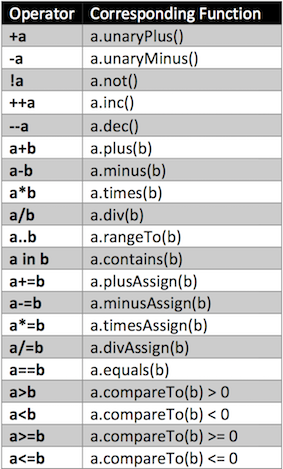
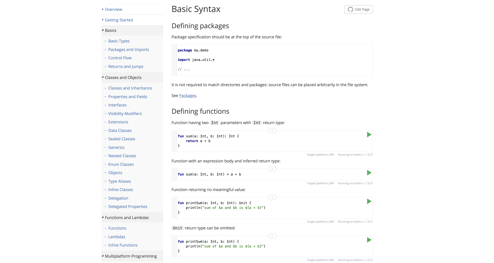
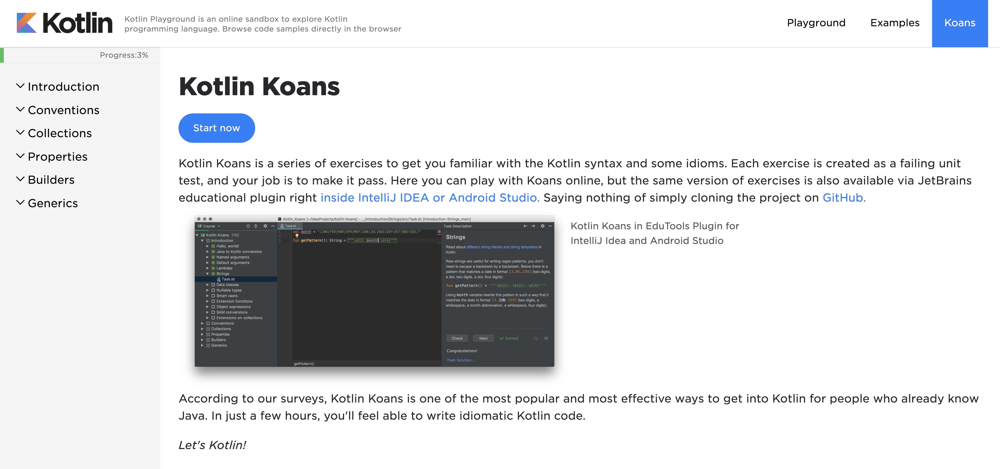
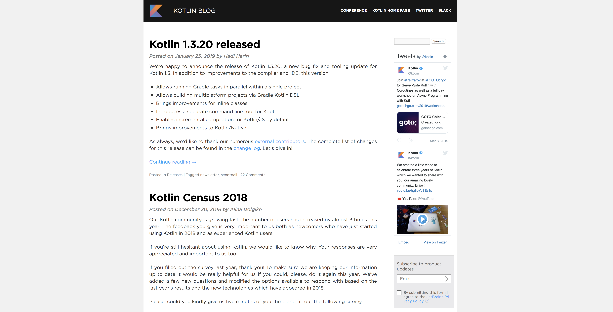
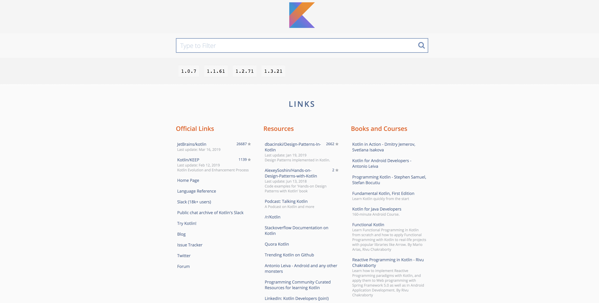

Kotlin:
Java++
KRZYSZTOF KĘDZIORSKI
ABOUT ME
KRZYSZTOF KĘDZIORSKI
D&M Director @ QSG S.A.
Java Developer since 2009
Father of lovely daughter
Big fan of Mountains
THE F**K
IS
No...
Yes !
kotlin.com kotlinlang.org
Kotlin is a cross-platform, statically typed, general-purpose programming language with type inference. Kotlin is designed to interoperate fully with Java, and the JVM [...] type inference allows its syntax to be more concise. Kotlin mainly targets the JVM, but also compiles to JavaScript or native code ...
Works on JVM
Compiles to JAVA bytecode
Environment doesn't have to change
Great interoperability
with JAVA
Can use all Java libraries from Kotlin
Can use all Kotlin libraries from Java
and even ...
One project can have both Java and Kotlin files
Clear, safety and concise
Reduced Java boilerplate
Null safety
Smart compiler inference
Data classes support
Easy to learn for JAVA Developers
Syntax similar to Java
Great documentation
Awesome IDE support
Great community
Very fast growing popularity
Google and JetBrains support
Spring support (5.0+)
The second least-disliked programming language
Kotlin beginnings
2011.07 - JetBrains shows "Project Kotlin"
2012.02 - JetBrains open-sourced code (Apache 2 Licence)
2016.02.15 - Kotlin v1.0 released
2017.03.01 - Kotlin v1.1 released
2017.05 - Google announced first-class Kotlin support on Android
2017.10 - Android Studio 3.0 (with Kotlin support for Android Development)
Kotlin beginnings
2011.07 - JetBrains shows "Project Kotlin"
2012.02 - JetBrains open-sourced code (Apache 2 Licence)
2016.02.15 - Kotlin v1.0 released
2017.03.01 - Kotlin v1.1 released
2017.05 - Google announced first-class Kotlin support on Android
2017.10 - Android Studio 3.0 (with Kotlin support for Android Development)
2017.11.28 - Kotlin v1.2 released
2018.10.29 - Kotlin v1.3 released
Null-Pointer Safety

Null-Pointer Safety
var a: String = "abc"
a = null // compilation error
var b: String? = "abc"
b = null // ok
print(b)
var a: String = "abc"
var b: String? = "abc"
val l = a.length
val l = b.length // error: variable 'b' can be null
val a = "Kotlin"
val b: String? = null
println(b?.length)
println(a?.length) // Unnecessary safe call
bob?.department?.head?.name
val l: Int = if (b != null) b.length else -1
val l = b?.length ?: -1 // Elvis operator
But for NPE-lovers there is ...
val l = b!!.length
Extension Functions
fun List<Int>.swap(index1: Int, index2: Int) {
val tmp = this[index1] // 'this' corresponds to the list
this[index1] = this[index2]
this[index2] = tmp
}
val l = listOf(1, 2, 3)
l.swap(0, 2) // 'this' inside 'swap()' will hold the value of 'l'
Generic
fun <T> List<T>.swap(index1: Int, index2: Int) {
val tmp = this[index1] // 'this' corresponds to the list
this[index1] = this[index2]
this[index2] = tmp
}
Extensions are resolved statically
open class C
class D: C()
fun C.foo() = "c"
fun D.foo() = "d"
fun printFoo(c: C) {
println(c.foo())
}
fun main(){
printFoo(D())
}
Printed result: c
Nullable Receiver
fun Any?.toString(): String {
if (this == null) return "null"
// after the null check, 'this' is autocast to a non-null type, so the toString() below
// resolves to the member function of the Any class
return toString()
}
Extension Properties
val <T> List<T>.lastIndex: Int
get() = size - 1
val Foo.bar = 1 // error: initializers are not allowed
// for extension properties
Scope of Extension
package foo.bar
fun Baz.goo() { ... }
package com.example.usage
import foo.bar.goo // importing all extensions by name "goo"
// or
import foo.bar.* // importing everything from "foo.bar"
fun usage(baz: Baz) {
baz.goo()
} Operator overloading
-a, +a, !a, a++, a--
a[i], a[i] = b, a(), a(i)
a + b, a - b, a * b, a / b, a % b, a..b, a in b, a !in b
a += b, a -= b, a *= b, a /= b, a %= b
a == b, a != b
a > b, a < b, a <= b, a >= bCheatsheet
Example usage
data class Counter(val dayIndex: Int) {
operator fun plus(increment: Int): Counter {
return Counter(dayIndex + increment)
}
}
data class Counter(val dayIndex: Int)
operator fun Counter.plus(increment: Int): Counter {
return Counter(dayIndex + increment)
}
val c = Counter(10) + 5 // c == Counter(15)
Example usage
var list: List<String> = ArrayList()
list += "Hello" //list contains [Hello]
list += "World" //list contains [Hello, World]
println(list[0]) // prints 'Hello'
println("World" in list) //prints true
list -= "World" //list contains [Hello]
println("World" in list) //prints false
var list2: List<String> = list + "World" //list2 contains [Hello, World]
println("World" in list2) //prints true
Data classes
data class User(val name: String, val age: Int)
equals() / hashCode() pair
toString() as "User(name=John, age=42)"
componentN() functions corresponding to the properties in their order of declaration
copy() function
data class User(val name: String = "", val age: Int = 0)
fun copy(name: String = this.name, age: Int = this.age)
= User(name, age)
val jack = User(name = "Jack", age = 1)
val olderJack = jack.copy(age = 2)
Strings ++
for (c in str) {
println(c)
}
val s = "Hello, world!\n"
val text = """
for (c in "foo")
print(c)
"""
val text = """
|Tell me and I forget.
|Teach me and I remember.
|Involve me and I learn.
|(Benjamin Franklin)
""".trimMargin()
String templates
val i = 10
println("i = $i") // prints "i = 10"
val s = "abc"
println("$s.length is ${s.length}") // prints "abc.length is 3"
When expression
when (x) {
1 -> print("x == 1")
2 -> print("x == 2")
else -> { // Note the block
print("x is neither 1 nor 2")
}
}
... switch ++
when (x) {
0, 1 -> print("x == 0 or x == 1")
parseInt(s) -> print("s encodes x")
else -> print("s does not encode x")
}
when (x) {
in 1..10 -> print("x is in the range")
in validNumbers -> print("x is valid")
!in 10..20 -> print("x is outside the range")
else -> print("none of the above")
}
when (val response = executeRequest()) {
is Success -> response.body
is HttpError -> throw HttpException(response.status)
}
Replacement for an if-else chain
when {
x.isOdd() -> print("x is odd")
x.isEven() -> print("x is even")
else -> print("x is funny")
}
Smart Casts
Operators is and !is
fun demo(x: Any) {
if (x is String) {
print(x.length)
}
if (x !is String) { // same as !(x is String)
print("Not a String")
}
else {
print(x.length)
}
}
fun demo(x: Any) {
if (x is String) {
print(x.length) // x is automatically cast to String
}
if (x !is String) {
print("Not a String")
}
else {
print(x.length) // x is automatically cast to String
}
}
// x is automatically cast to string
// on the right-hand side of `||`
if (x !is String || x.length == 0) return
// x is automatically cast to string
// on the right-hand side of `&&`
if (x is String && x.length > 0) {
print(x.length) // x is automatically cast to String
}
when (x) {
is Int -> print(x + 1)
is String -> print(x.length + 1)
is IntArray -> print(x.sum())
}
as keyword
Unsafe cast operator
val x: String = y as String
// exception when it doesn't make sense (ex. casting null)
val x: String? = y as String?
// it will be OK even when y is null
Safe cast operator
val x: String? = y as? String
// returns null on failure
Destructuring Declarations
val (name, age) = person
for ((name, age) in people) {
// do something with name and age
}
for ((key, value) in map) {
// do something with the key and the value
}
How it works
val (name, age) = person
val name = person.component1()
val age = person.component2()
val (_, status) = getResult()
Sealed Classes
sealed class Expr
data class Const(val number: Double) : Expr()
data class Sum(val e1: Expr, val e2: Expr) : Expr()
object NotANumber : Expr()
fun eval(expr: Expr): Double = when(expr) {
is Const -> expr.number
is Sum -> eval(expr.e1) + eval(expr.e2)
NotANumber -> Double.NaN
// the `else` clause is not required
// because we've covered all the cases
}
Remember: I'm showing only few differences
of my choice ...
Kotlin '==' means Java equals()
Java '==' means Kotlin '==='
There's no 'new' keyword in Kotlin
val list: List = ArrayList()
val list = ArrayList() //type inference
Kotlin classes can have properties
class Address {
var name: String = ...
var street: String = ...
var city: String = ...
var state: String? = ...
var zip: String = ...
}
var stringRepresentation: String
get() = this.toString()
set(value) {
setDataFromString(value) // parses the string and assigns values to other properties
}
There's no primitive types in Kotlin
... but in byte code not-null types still are primitives
if, when are also expressions
max = if (a > b) a else b
result = when (x) {
1 -> 11
2 -> 22
else -> 0
}
Kotlin does not have checked exceptions
Kotlin does not have static members
... but there's companion object ...
class MyClass {
companion object Factory {
fun create(): MyClass = MyClass()
}
}
val instance = MyClass.create()
Kotlin has type inference for variables and properties
... from Java 10 there is support for type inference local variables only
Kotlin has build in singleton support
object DataProviderManager {
fun registerDataProvider(provider: DataProvider) {
// ...
}
val allDataProviders: Collection<DataProvider>
get() = // ...
}
DataProviderManager.registerDataProvider(...)
Kotlin Documentation
kotlinlang.org/docs Kotlin Koans
play.kotlinlang.org/koans Convert JAVA file to Kotlin
JetBrains Blog: Kotlin
blog.jetbrains.com/kotlin Kotlin.link
kotlin.link Kotlin Weekly
kotlinweekly.netTalking Kotlin Podcast
talkingkotlin.comConference Presentations
Venkat Subramaniam - Kotlin for Java Programmers (JBCNConf 2018)
Paweł Byszewski - Kotlin, why ? (Confitura 2016)
Conference Presentations
Andey Breslav - How to Kotlin: from the Lead Kotlin Language Designer (Google I/O 2018)
Hadi Hariri - Functional Programming with Kotlin (GOTO 2018)
KotlinConf
KotlinConf 2018
KotlinConf 2017
Youtube Videos
Jake Wharton - 10 Kotlin Tricks in 10 ish minutes (Devoxx)
Kotlin Coroutines Tutorial
Thank you
Photo Credits:
- Slide 'WTF is Kotlin ?': Photo by Kyle Simmons
- Slide 'Kotlin History': Photo by Joel Overbeck
- Slide 'Kotlin Cool Features': Photo by Ben White
- Slide 'Why Kotlin ?': Photo by Mari Lezhava
- Slide 'How to Start ?': Photo by Martin Widenka
- Slide 'Where learn More ?': Photo by Phad Pichetbovornkul
- Slide 'Diffrences ?': Photo by Dietmar Becker
- Meme 'Kotlin-Android-Java': By Brijesh Masrani
- Operator Overloading Cheatsheet: By Adam P. Regasz-Rethy